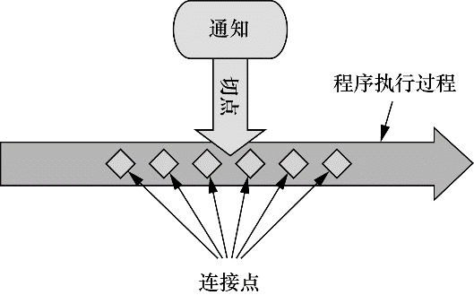

读书笔记：Spring实战第四章
本章主要介绍Spring中的面向切面编程思想（AOP）。
什么是AOP
在模块化应用中，每个模块都有自己的核心功能，也有很多为了保障核心功能运行而生的辅助功能。他们跟应用逻辑无关但是十分必要。如果把这些功能分别实现，会产生代码的重复和耦合。在Spring中，可以把辅助功能分离出来单独实现，并通过声明的方式定义这个功能要以何种方式在何处应用，而无需修改受影响的类。例如，账号登录注册和交易模块都涉及安全规则，这就是一个横切关注点。我们把安全规则设计好并声明到这两个模块里面，这个规则本身就是切面。
这样做有两个好处：首先，现在每个关注点都集中于一个地方，而不是分散到多处代码中；其次，服务模块更简洁，因为它们只包含主要关注点（或核心功能）的代码，而次要关注点的代码被转移到切面中了。
定义AOP术语
与大多数技术一样，AOP已经形成了自己的术语。描述切面的常用术语有通知（advice）、切点（pointcut）和连接点（join point）。下图展示了这些概念是如何关联在一起的。

通知
在AOP术语中，切面的工作被称为通知。通知定义了切面是什么以及何时使用。Spring切面可以应用5种类型的通知：
- 前置通知（Before）：在目标方法被调用之前调用通知功能；
- 后置通知（After）：在目标方法完成之后调用通知，此时不会关心方法的输出是什么；
- 返回通知（After-returning）：在目标方法成功执行之后调用通知；
- 异常通知（After-throwing）：在目标方法抛出异常后调用通知；
- 环绕通知（Around）：通知包裹了被通知的方法，在被通知的方法调用之前和调用之后执行自定义的行为。
连接点
连接点是在应用执行过程中能够插入切面的一个点。这个点可以是调用方法时、抛出异常时、甚至修改一个字段时。切面代码可以利用这些点插入到应用的正常流程之中，并添加新的行为。
切点
如果说通知定义了切面的“什么”和“何时”的话，那么切点就定义了“何处”。切点的定义会匹配通知所要织入的一个或多个连接点。切点和通知共同定义了切面的全部内容。
织入
织入是把切面应用到目标对象并创建新的代理对象的过程。切面在指定的连接点被织入到目标对象中。在目标对象的生命周期里有多个点可以进行织入：
- 编译期：切面在目标类编译时被织入。这种方式需要特殊的编译器。AspectJ的织入编译器就是以这种方式织入切面的。
- 类加载期：切面在目标类加载到JVM时被织入。这种方式需要特殊的类加载器（ClassLoader），它可以在目标类被引入应用之前增强该目标类的字节码。AspectJ 5的加载时织入（load-time weaving，LTW）就支持以这种方式织入切面。
- 运行期：切面在应用运行的某个时刻被织入。一般情况下，在织入切面时，AOP容器会为目标对象动态地创建一个代理对象。Spring AOP就是以这种方式织入切面的。
在Spring种，我们大部分情况下使用纯POJO类，小部分情况使用@AspectJ注解来实现切面。
用法
考虑一个演出场景。
如果一场演出没有观众的话，那不能称之为演出。对不对？从演出的角度来看，观众是非常重要的，但是对演出本身的功能来讲，它并不是核心，这是一个单独的关注点。因此，将观众定义为一个切面，并将其应用到演出上就是较为明智的做法。
1 | public interface Performance{ |
假设我们想在演出之前让观众就座，可以这样写：
1 |
|
注解里面的参数是一个切点表达式。这个式子表达了在execution指示器中选择了返回*（任意）类型的，位于concert包Performance类中的perform 方法，无论他的参数是什么（..）
指示器还可以选择特定的包和bean 切入，只需要在注解后面直接回车加上&& within('thePackage') 或者 and bean('the bean') 即可。除了&&之外，|| 和 ! 也同样可以发挥相应的作用。
AspectJ提供了五个注解来定义通知
| 注解 | 通知 |
|---|---|
| @After | 通知方法会在目标方法返回或抛出异常后调用 |
| @AfterReturning | 通知方法会在目标方法返回后调用 |
| @AfterThrowing | 通知方法会在目标方法抛出异常后调用 |
| @Around | 通知方法会把目标方法封装起来 |
| @Before | 通知方法会在目标方法调用之前执行 |
创建环绕通知
随着通知的增多，我们在使用前置和后置通知时需要不停的重复编写形如execution……的切点表达式，这样很不方便。这时候我们就可以使用环绕通知。它能够让你所编写的逻辑将被通知的目标方法完全包装起来。
使用环绕通知重新实现Audience切面
观众应该在演出开始前静音手机，就座，在演出结束时鼓掌，如果有舞台事故应该要求退款
1 |
|
通知方法中可以做任何的事情，当要将控制权交给被通知的方法时，调用ProceedingJoinPoint的proceed()方法即可。
有意思的是，你可以不调用proceed()方法，从而阻塞对被通知方法的访问，与之类似，你也可以在通知中对它进行多次调用。要这样做的一个场景就是实现重试逻辑，也就是在被通知方法失败后，进行重复尝试
上图表示了在JavaConfig中启动自动代理来应用bean形式的切面。